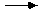

The module dependencies of Standard Generic Modula-2 are the same as those in the base language, with the following additions:
| Chart of dependencies: | ||||
|---|---|---|---|---|
| generic definition  | generic implementation | local refinement | ||
| refining definition | refining implementation | |||
| Importer of (separate) refined module | ||||
If an implementation module of a generic separate module contains one or more refining local modules, then the order of refinement is the same as the order of initialization would be once the modules were fully refined. This means that the outer module is refined first, then the local modules in the textual order in which they appear, and then any local modules contained in the generic separate modules from which they are being refined, and so on.
This process is not recursive, whether directly or indirectly. If the implementation part of a generic separate module contains refining local module, that refining local module cannot refine from the same generic separate module in which it is contained. Neither may two generic separate modules each contain a refiner to the other. That is generic separate module A cannot contain a local module refining from generic separate module B which in turn contains a local module refining from A.
The module initialization order in Standard Generic Modula-2 is determined by applying the rules of the base language after the refinements of any generic separate modules have been completed. This means that if a program uses two different refinements of the same generic separate module, these are regarded as different modules in the sense of the base language. Each has its own initialization, and the two initializations are done in an order determined by the import lists of the program.
The module termination order in Standard Generic Modula-2 is determined by applying the rules of the base language after the refinements of any generic separate modules have been completed. This means that if a program uses two different refinements of the same generic separate module, the two modules are terminated in an order determined by their initialization.
The rules for import lists in a module in Standard Generic Modula-2 are identical to those of the base language and are applied after the refinement of any generic separate modules has taken place. In addition, the rules for imports into generic separate modules are the same as the rules for any other separate modules.
NOTE: Because the names of formal parameters are in the scope of a generic separate module, and they are treated as imports, they may not clash with any identifiers named in an import list of that module.
A refined separate module has as its qualified export list the items defined in the generic definition module of which its refining separate module is a refiner. A refined local module, on the other hand, has as its export list the items named in the (possibly qualified) export list of the refining local module. Items not in the generic separate definition module cannot be in this export list.
Thus, if one had:
GENERIC DEFINITION MODULE SomeGenericStuff (GenType: TYPE; aConst : CARDINAL); CONST aConst : INTEGER; (* sorry, this is an illegal with the formal parameter name *) END SomeGenericStuff.
then the definition of aConst here is a redefinition of an item with the same name in the same scope and so is forbidden. Moreover, if this were completed with an implementation that looked like
GENERIC IMPLEMENTATION MODULE SomeGenericStuff (GenType: TYPE; aConst : CARDINAL); CONST bConst : INTEGER; (* can't be exported by a refiner *) END SomeGenericStuff.
then one could not refine the implementation with an export as in the local module contained below:
IMPLEMENTATION MODULE DoGen;; MODULE Local = SomeGenericStuff (CARDINAL, 5); EXPORT bConst; (* this export is illegal; not in definition *) END Local; END DoGen.